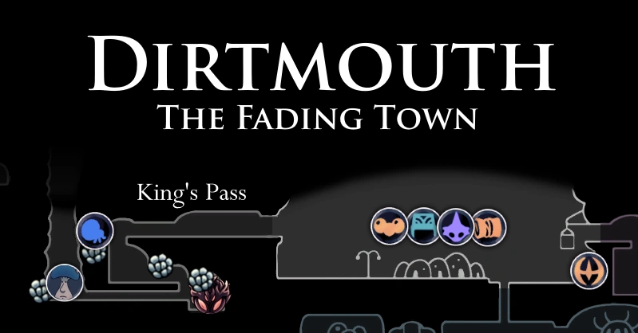
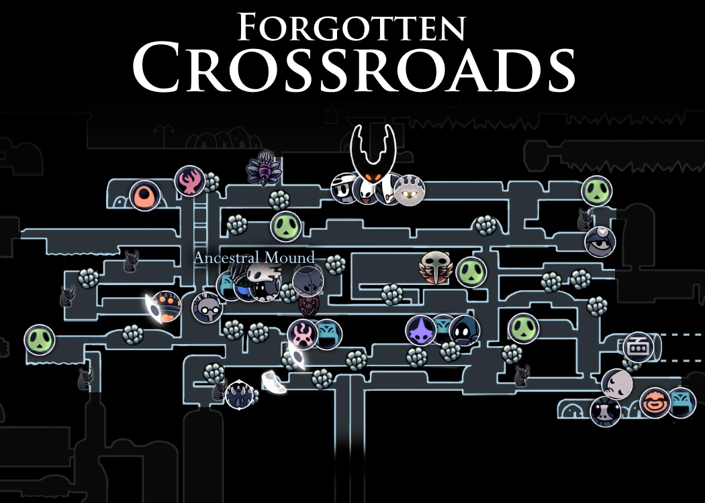
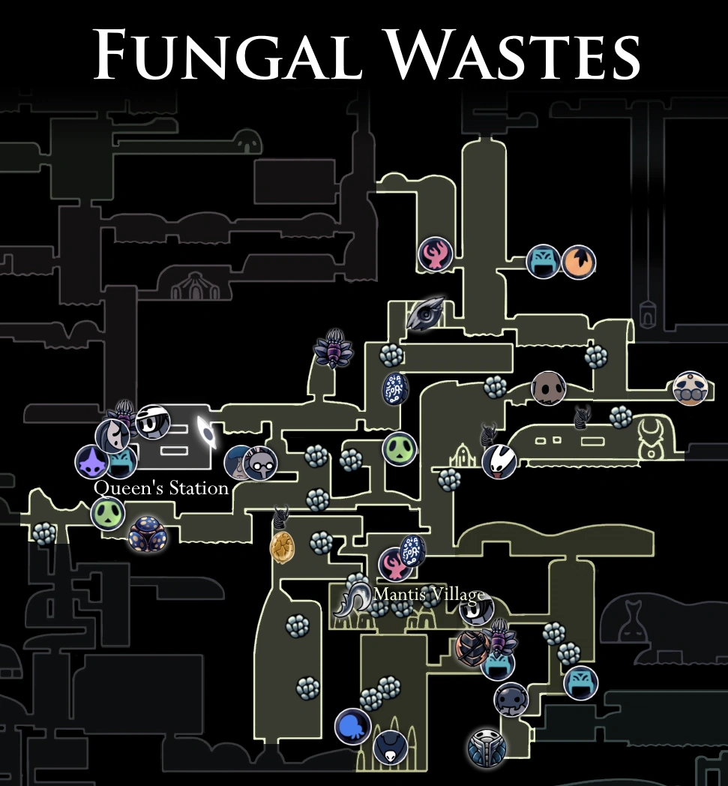
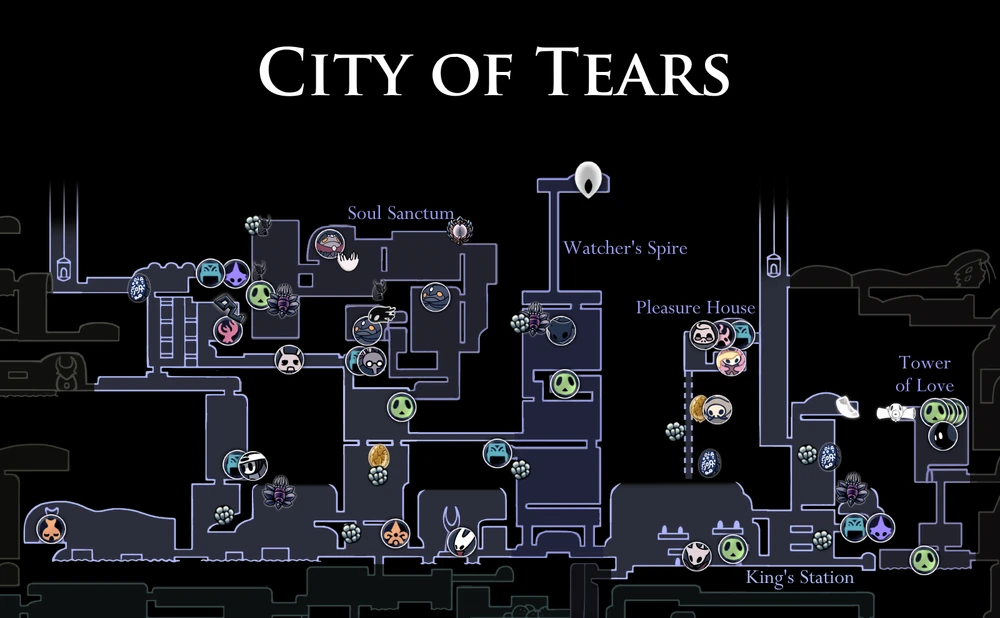

Boca Sucia
Bocasucia se encuentra justo encima de las ruinas del reino de Hallownest, en un valle estéril con raros mechones de hierba, a salvo de los vientos del páramo. Muchos postes de luz lumafly se erigen en la ciudad y sus alrededores. Los viajeros solían venir a través del Paso del Rey, al oeste del valle, durante el apogeo del reino. Sin embargo, una gran puerta ahora bloquea el acceso al paso y el puente que conduce desde él se derrumbó, obligando a los vagabundos ocasionales a través de duros desvíos alrededor de los acantilados. El Caballero llega a Bocasucia a través de ese paso después de derribar su puerta de piedra, marcando el comienzo de su viaje a través de Hallownest.
Cruces Olvidados
La Encrucijada Olvidada es un área debajo de Boca Sucia. Sus carreteras y cavernas conectan con muchas otras áreas de Hallownest. Situada justo debajo de la superficie, la Encrucijada Olvidada consta de muchas cavernas y caminos. Restos fosilizados de insectos cubren las superficies de las cavernas, con helechos pálidos que crecen a través de las grietas en el suelo. El Templo del Huevo Negro se encuentra cerca de la entrada al pozo en Dirtmouth, en el noreste de la zona. Se puede luchar contra dos jefes, el Hollow Knight y el Radiance. Quirrel también se puede encontrar aquí. En el noroeste de la zona se encuentra Grubhome, hogar de Grubfather.
Sendero Verde
Greenpath es un área al oeste de la Encrucijada Olvidada con una exuberante vegetación, custodiada por una especie de insecto frondoso. Los charcos de ácido ardiente y la espesa maleza dificultan la navegación. Greenpath es una exuberante caverna verde, compuesta por vegetación diversa, valles cubiertos de musgo y amplios lagos de ácido. Estas características se reflejan profundamente en sus habitantes, quienes desarrollaron un camuflaje natural cubierto de musgo, lo que les permitió mezclarse perfectamente con su entorno. A lo largo de todo Greenpath, con frecuencia se pueden ver pilares y piedras en forma de huevo con tallas arremolinadas, que a veces alcanzan tamaños enormes.

Paramos Fúngicos
Los Desechos Fúngicos son un área húmeda ubicada cerca del centro de Hallownest con conexiones a varias otras áreas. Las nocivas cavernas de los Páramos Fúngicos están cubiertas de hongos de todo tipo. Además de esto, los charcos cáusticos de ácido son abundantes en toda el área. Los Páramos Fúngicos están poblados por el Clan Champiñón, un grupo territorial que representa una amenaza para cualquiera que deambule cerca. La Tribu Mantis tiene su hogar más adentro de la zona y son igualmente poco acogedores con los forasteros. Una de las principales características de la zona es la gran Estación del Ciervo en la parte oeste, la Estación de la Reina.
Ciudad de Lágrimas
La Ciudad de las Lágrimas está construida en una enorme caverna bajo el Lago Azul. Cuenta con numerosas torres grandes con amplios ventanales que ofrecen vistas de la ciudad. Es posible subir y bajar estas torres a través de pequeños ascensores. La ciudad tiene una notable división entre la parte rica y la parte pobre. El lado este de la ciudad es donde vivía la alta sociedad de Hallownest. Los interiores en esta parte de la Ciudad de las Lágrimas son más elegantes y lujosos y contienen un patrón de color rojo y púrpura, mientras que los interiores de la parte oeste parecen ser más comunes y sencillos con más tonos de color azul.
